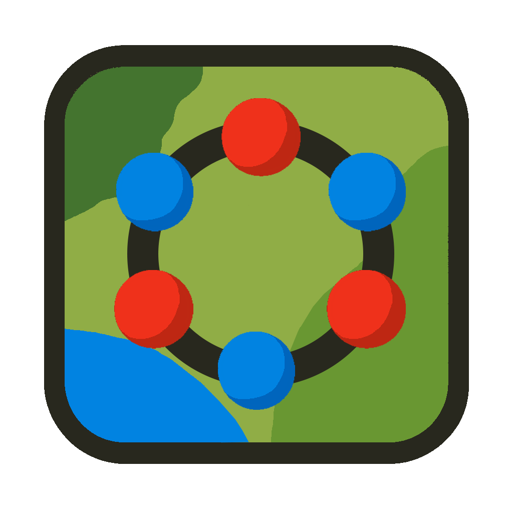
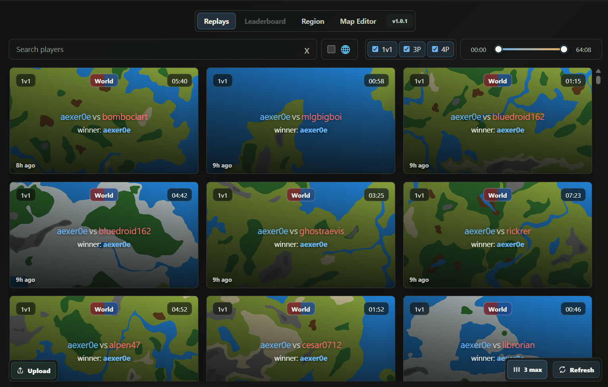
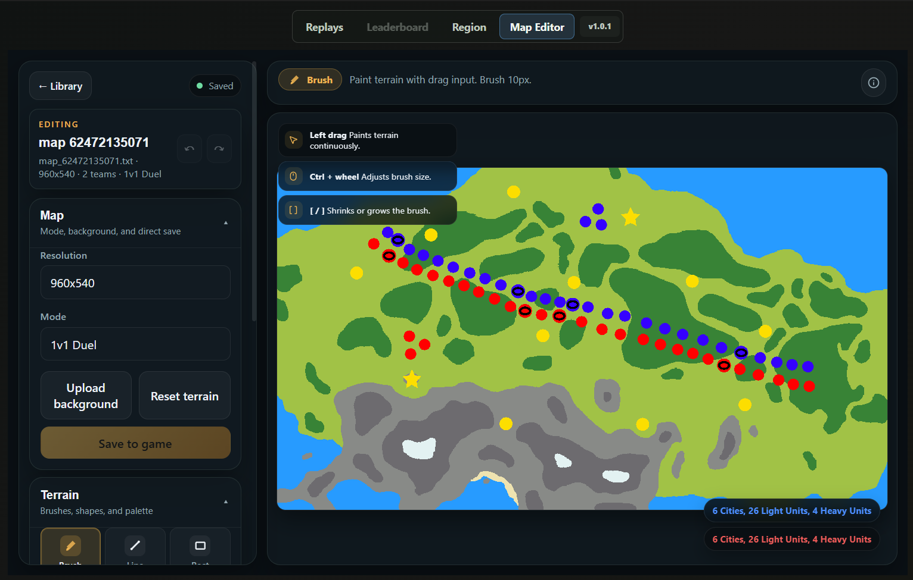
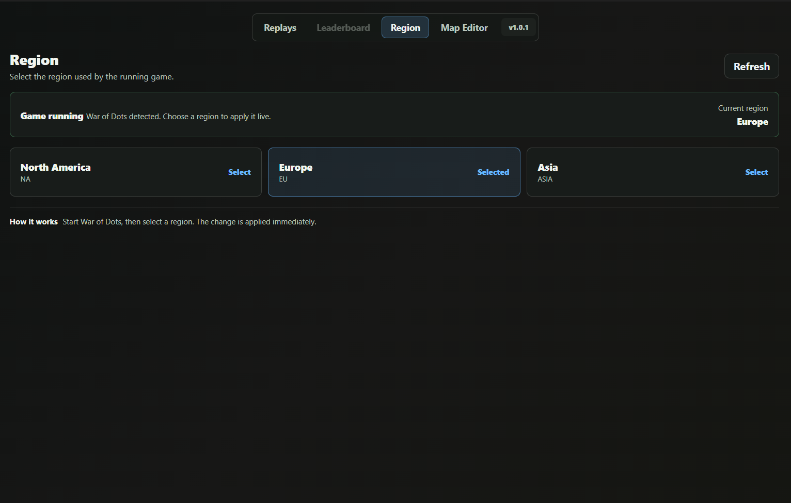

A free Windows app for War of Dots. Browse and back up replays, switch game regions, and create custom maps.
Free · Open source · Windows installer

Search replays by player and download them directly into the game.
Discovered replays are backed up automatically.
Change your game region from within the app. No VPN required.
Create and edit custom maps and save them to the game.

